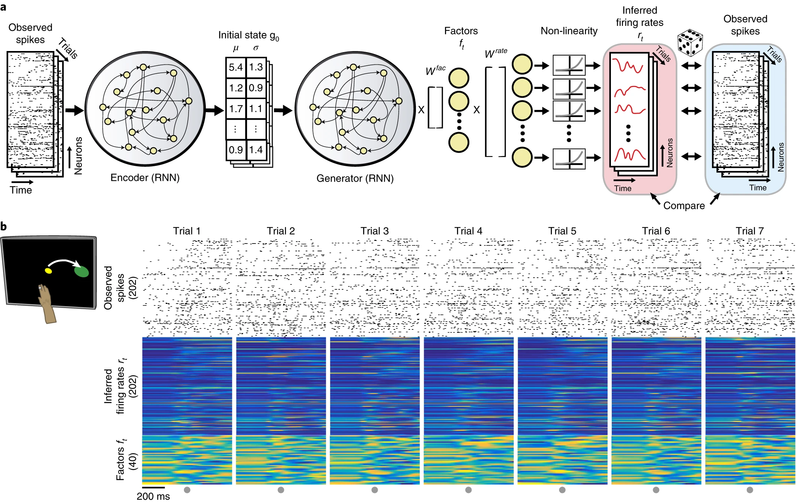

Training Biological Neural Networks on Spiking Data
Overview
Inspired by my work on training biological neural networks (BNNs) and many recent papers training, for example, variational autoencoders (VAEs) on spiking data from real animals, I wanted to try and combine these two tasks. This work is kind of a long shot because I have only been succesful in training BNNs on MNIST which is one of the dumbest tasks in deep learning. I made the unfotunate decision to do this work as a final project for my one class, requiring me to double down and try and get it done in a very short amount of time (around two weeks). This article will take the form of my thoughts as I think them up on the topic, with the hope of forming some coherent approach.
Inspiration: LFADS
The main work I aim to build on is this "LFADS" paper, and the previous paper introducing the technique here.

What is it that LFADS is trying to do? Above is a schematic underlying the main idea of the approach. The indexing corresponds to the four assumptions detailed in their introduction. Essentially, the assumption is that we have some dynamical system \(F\) driven by some external inferred input as well as an initial condition which is also inferred. The output is then some transformation of the internal state \(F(t)\) to a spiketrain or firing rate trace that should approximate the original spiketrain. In the LFADS paper, they assume that external output (4) is modelled by a Poisson process.
The diagram above really just describes the network generator (decoder) and drops details of the encoder. The encoder, however, is central to training the encoder and inferring (2) and (3), the initial conditions, and what drives the network over time. These are what is considered the "latent representation" of the data because it is a (typically lower-dimensional) representation of the data that drives the system to give us a prediction. We can view this as a form of compression but also can view it is as a translation from raw data to some representation that is potentially more interpretable and tells us something about the system. The latter perspective is more important in the LFADS case, I think.
Here are some of the more internal details of LFADS. They use a bidirectional RNN encoder network which encodes a spiketrain to distributions for each input in the spike array. Then, they use another RNN that is just trained forwards to predict firing rates and then corresponding spiketrains from the input distributions. The aim is to reproduce the data by encoding it using the distributions. Variational autoencoders are used because the trained decoder (also called generator) can be used to generate novel samples given inputs not produced by the encoder.
Incorporating BNNs: First Steps
Let's look at the plot I made of the dynamical system hypothesis above and let's try come up with something using BNNs to replace/incorporate into LFADS. First, let's ask what it is that \(F\) is really approximating. In the case of spiking data from from the motor cortex, \(F\) is approximating a population of neurons in the motor cortex that are being sampled. This is where there is a clear application of BNNs: just replace \(F\) with some network of biological neuron models with a sufficient level of complexity. The idea is something like this: